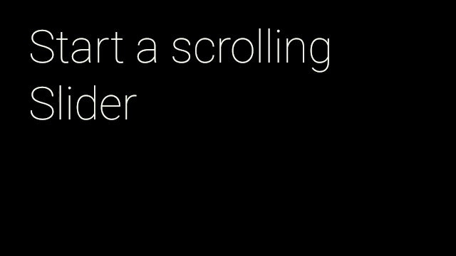

Slider
You can use sliders to show a loading, progress, or navigation bar on the bottom of the screen. Sliders are global UX components and should be treated with care when implementing them in your Glassware.
Important:
Sliders are shared between different activities in Glass. For example, if you launch a slider in your activity, and the user pauses your activity to start a new activity that launches its own slider, when your activity resumes, your slider is not continued. If you want your slider to appear again, you must handle this scenario.
Slider requests must be associated with a view and those requests are only honored when the window containing that view has focus. If another window comes into focus on Glass, the system hides the slider.
Scroller Slider

Scroller sliders are used to indicate the position of a card as you swipe through multiple cards. You can create the same type of effect using Slider.Scroller [TODO: ADD LINK].
- Use
Slider.from()[TODO: ADD LINK] to create aSlider[TODO: ADD LINK] that uses aViewto display the slider. - Create the
Slider.Scroller[TODO: ADD LINK] usingstartScroller()[TODO: ADD LINK] and set the max and initial positions.
Here's a simple implementation that animates a scroller to the next position when the user taps:
public final class SliderActivity extends Activity {
private static final int MAX_SLIDER_VALUE = 5;
private static final long ANIMATION_DURATION_MILLIS = 5000;
private CardScrollView mCardScroller;
private Slider mSlider;
@Override
protected void onCreate(Bundle bundle) {
super.onCreate(bundle);
// Create the cards for the view
mCardScroller = new CardScrollView(this);
mCardScroller.setAdapter(new CardAdapter(createCards()));
// Set the view for the Slider
mSlider = Slider.from(mCardScroller);
mCardScroller.setOnItemClickListener(new AdapterView.OnItemClickListener() {
@Override
public void onItemClick(AdapterView<?> parent, View view,
int position, long id) {
processSliderRequest(position+1);
}
});
setContentView(mCardScroller);
}
private void processSliderRequest(position) {
Slider.Scroller scroller = mSlider.startScroller(MAX_SLIDER_VALUE, 0);
// Animate the slider to the next position. The slider
// automatically hides after the duration has elapsed
ObjectAnimator.ofFloat(scroller, "position", 0, position)
.setDuration(ANIMATION_DURATION_MILLIS)
.start();
}
}
Grace Period Slider

Grace period sliders work in activities where it is useful for a user to see a notification, but user interaction is not required. You can add this animation by using Slider.GracePeriod [TODO: ADD LINK].
- Use
Slider.from()[TODO: ADD LINK] to create aSlider[TODO: ADD LINK] that uses aViewto display the slider. - Create a
GracePeriod.Listener[TODO: ADD LINK] and implement theonGracePeriodEnd()[TODO: ADD LINK] andonGracePeriodCancel()[TODO: ADD LINK] to handle those events. - Create a
Slider.GracePeriod[TODO: ADD LINK] and start the animation by passing in theGracePeriod.Listener[TODO: ADD LINK] to thestartGracePeriod()[TODO: ADD LINK] method. - Override the activity's
onBackPressed()to handle the swipe down gesture. - If the user swipes down, call
cancel()[TODO: ADD LINK] on theSlider.GracePeriod[TODO: ADD LINK] to dismiss the slider.
In the following example, the grace period scroller is initiated with a listener that plays a success sound when the period ends and a dismissed sound if the grace period slider is cancelled:
public final class SliderActivity extends Activity {
...
private Slider.GracePeriod mGracePeriod;
private final GracePeriod.Listener mGracePeriodListener =
new GracePeriod.Listener() {
@Override
public void onGracePeriodEnd() {
// Play a SUCCESS sound to indicate the end of the grace period.
AudioManager am = (AudioManager) getSystemService(Context.AUDIO_SERVICE);
am.playSoundEffect(Sounds.SUCCESS);
mGracePeriod = null;
}
@Override
public void onGracePeriodCancel() {
// Play a DIMISS sound to indicate the cancellation of the grace period.
AudioManager am = (AudioManager) getSystemService(Context.AUDIO_SERVICE);
am.playSoundEffect(Sounds.DISMISSED);
mGracePeriod = null;
}
};
@Override
protected void onCreate(Bundle bundle) {
super.onCreate(bundle);
// Create the cards for the view
mCardScroller = new CardScrollView(this);
mCardScroller.setAdapter(new CardAdapter(createCards()));
// Set the view for the Slider
mSlider = Slider.from(mCardScroller);
mCardScroller.setOnItemClickListener(new AdapterView.OnItemClickListener() {
@Override
public void onItemClick(AdapterView<?> parent, View view,
int position, long id) {
mGracePeriod = mSlider.startGracePeriod(mGracePeriodListener);
}
});
setContentView(mCardScroller);
}
@Override
public void onBackPressed() {
// If the Grace Period is running,
// cancel it instead of finishing the Activity.
if (mGracePeriod != null) {
mGracePeriod.cancel();
} else {
super.onBackPressed();
}
}
}
Determinate Slider

Determinate sliders are mainly used to show progress where you can calculate when a task finishes. You can add this animation by using Slider.Determinate [TODO: ADD LINK].
- Use
Slider.from()[TODO: ADD LINK] to create aSlider[TODO: ADD LINK] that uses aViewto display the slider. - Create the
Slider.Determinate[TODO: ADD LINK] usingstartScroller()[TODO: ADD LINK] and set the max and initial positions. - When the animation finishes, call the
hide()[TODO: ADD LINK] method on theSlider.Determinate[TODO: ADD LINK] to hide the slider.
Here's a simple implementation that animates the scroller to a set position when the user taps:
public final class SliderActivity extends Activity {
...
private Slider.Determinate mDeterminate;
@Override
protected void onCreate(Bundle bundle) {
super.onCreate(bundle);
// Create the cards for the view
mCardScroller = new CardScrollView(this);
mCardScroller.setAdapter(new CardAdapter(createCards()));
// Set the view for the Slider
mSlider = Slider.from(mCardScroller);
mCardScroller.setOnItemClickListener(new AdapterView.OnItemClickListener() {
@Override
public void onItemClick(AdapterView<?> parent, View view,
int position, long id) {
mDeterminate = mSlider.startDeterminate(MAX_SLIDER_VALUE, 0);
ObjectAnimator animator = ObjectAnimator.ofFloat(mDeterminate,
"position", 0, MAX_SLIDER_VALUE);
// Hide the slider when the animation stops.
animator.addListener(new AnimatorListenerAdapter() {
@Override
public void onAnimationEnd(Animator animation) {
mDeterminate.hide();
}
});
// Start an animation showing the different positions of the slider.
animator.setDuration(ANIMATION_DURATION_MILLIS).start();
}
});
setContentView(mCardScroller);
}
}
Indeterminate Slider

Indeterminate sliders can be used for loading screens where it is difficult to calculate when the task finishes. You can add this animation by using Slider.Indeterminate [TODO: ADD LINK].
- Use
Slider.from()[TODO: ADD LINK] to create aSlider[TODO: ADD LINK] that uses aViewto display the slider. - Start the animation with the
Slider.startIndeterminate()[TODO: ADD LINK] method. - When you are ready to stop the animation, call the
hide()[TODO: ADD LINK] method on theSlider.Indeterminate[TODO: ADD LINK].
Here's a simple implementation that creates the indeterminate scroller when the user taps the card and hides it when the user taps again:
public final class SliderActivity extends Activity {
...
private Slider.Indeterminate mIndeterminate;
@Override
protected void onCreate(Bundle bundle) {
super.onCreate(bundle);
// Create the cards for the view
mCardScroller = new CardScrollView(this);
mCardScroller.setAdapter(new CardAdapter(createCards()));
// Set the view for the Slider
mSlider = Slider.from(mCardScroller);
mCardScroller.setOnItemClickListener(new AdapterView.OnItemClickListener() {
@Override
public void onItemClick(AdapterView<?> parent, View view,
int position, long id) {
// Toggle between showing/hiding the indeterminate slider.
if (mIndeterminate != null) {
mIndeterminate.hide();
mIndeterminate = null;
} else {
mIndeterminate = mSlider.startIndeterminate();
}
});
setContentView(mCardScroller);
}
}
Portions of this page are reproduced from work created and shared by Google and used according to terms described in the Creative Commons 4.0 Attribution License.